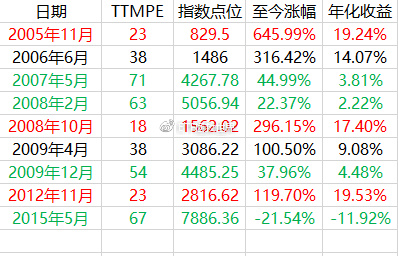

这个样子应该不会翻盘了，500开车。这几次买入后，因为年报季报带来的业绩冲击导致的稍大规模调仓也就结束了。预计继续回到小步慢跑的节奏——如果价格不会大幅下跌的话。
来，跟各位一起更新一下500在不同估值买入到现在为止的收益率。

几点说明：
绿色是四次估值极高的时候买入到现在的收益率/年化收益率。可以看出，都不超过5%。甚至有2%、3%，甚至年化收益是负的。真的不如余额宝。所谓“股票是最好的投资品种”这种话，大多数时候是对的。但你如果买贵了，恐怕几十年都没有好收益。
红色是几次估值极低时候买入。自己看收益率吧。要说明的是，这些接近20%的年化收益率，是在现在这个已经跌了很多的情况下实现的。你猜猜2015年最高的时候，这些底部买入的部分年化收益率是多少？大胆的猜。
黑色是估值均值的时候买入到现在。可以看出，也有10-14%的年化。
所以，你可以大概设想一下，未来你如果能在均值到极低区域布局，那么未来不说极度高估，就是再回到历史均值，你也有10%-20%的年化收益率没有问题。
那么，现在的估值是多少？
38。这也是我们再次开始买500的原因。